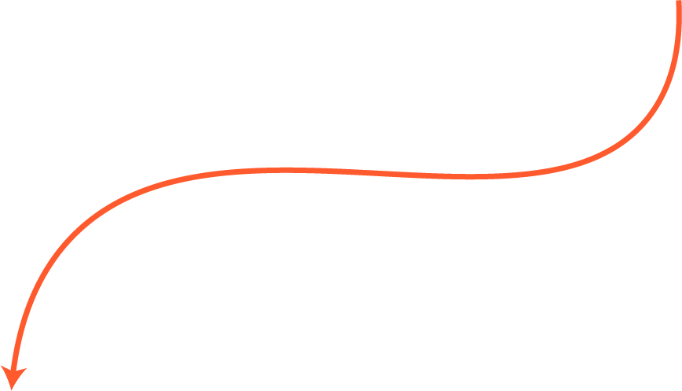

Kil Jeongyeon
Kil Jeongyeon
좁은 방, 똑같은 배치. 지긋지긋하다..
2021년 8월, 드디어 자취를 시작했다. 혼자 있는 시간을 즐기는 나에게 자취생활은 최고였다. 협동문까지 1분이 채 안 걸리는 내 소중한 5평 원룸. 그러나 공부, 잠, 요리, 식사를 모두 한 공간에서 이루어지기 때문이었을까. 내가 보는 시야는 늘 한정적이었고 그 공간 자체가 조금씩 질리기 시작했다. 하지만 계약기간은 한참 남아있었고, 공간이 질릴 때마다 이사를 갈 수도 없는 노릇이다.
I need a change!
환경에 변화가 필요했다. 나는 집중이 안되거나 기분이 우울할 때마다 방 청소를 하며 내 환경을 가꾸는데, 그럼에도 풀리지 않을 때가 있다. 그럴 때마다 방 배치를 바꾼다. 1년 반을 살면서 다섯 번 정도는 바꾼 것 같다. 효과는 매우 좋다.
지금부터 내 고뇌가 담긴, 그간 내 방의 성장과정이다.
2021.08
이 배치는 이사 왔을 때 그대로의 모습을 살린 배치이다. 넓은 휴식공간이 있다는 것이 특징이다. 침대 옆 공간이 꽤나 넓어서 친구들이 놀러오면 좌식테이블을 펼쳐두고 놀았다. 가끔 심심할 때 방바닥에 자주 드러눕기도 했다. 침대가 가장 명당자리에 위치해서, 자고 일어나면 머리맡에 햇빛이 쫙 들어와 기분 좋게 일어나곤 했다. 하지만 작업공간이 너무 불안정했다. 바로 옆에 현관문이 보여서 집중하기 어려웠다. 또 창을 등지게 되다 보니 괜히 앉기 싫어졌다. 작업공간의 개선이 필요했다. 휴학을 해서 집에서 작업을 하다보니 더 절실했다.
책상과 현관을 떨어뜨려야겠어!
2022.04
내 방에서 가장 구석진 곳(=명당)에 작업 공간을 내주었다. 오른쪽 창가에서 드는 햇빛을 볼 수 있어서, 작업할 때 좀더 '살아있다'는 느낌을 받았다. 다 좋았다. 그러나 휴식과 취침에 있어서는 최악이었다. 나는 이 때 당시 잠을 한 번이라도 개운하게 잔 적이 없었다. 바로 오른 편 벽이 옆집과 맞닿아 있어 각종 생활소음에 잠을 깼고, 침대에 누웠을 때 바로 출입문이 보이니 굉장히 불안했다. 침대는 절대 이곳에 있으면 안됐다.
침대도 현관에서 떨어뜨려야겠어! 침대가 옆집과 맞닿지 않도록 해야겠어!
2022.07
두 차례의 시행착오를 거치며, 현관 쪽에는 책상도 침대도 두지 않아야 함을 깨달았다. 그래서 주 생활공간은 최대한 안쪽으로 밀어넣고, 이를 위해 옷장을 비롯한 각종 짐들을 모두 현관 쪽으로 배치했다. 다시 창가 쪽에 침대가 위치해서 편안하게 잠을 잘 수 있었다. 옷장을 뺀 덕에 책상도 안쪽으로 밀어 넣을 수 있었다. 서랍장 위에 올라가있던 선반도 분리해서 책장으로 활용하여 작업공간을 넓혔다. 작업공간과 휴식의 균형이 잡혔다. 침대에서 누웠을 때 책상 위의 모니터가 보여 애니메이션을 보면서 편안하게 잠들 수 있다는 점도 마음에 들었다.
(역시 구석이 최고야)
2022.12
친구 집들이를 다녀온 후, 책상 앞이 트여있는 배치에 도전해보고 싶어졌다. 벽만 보던 시야가 확 트이니 시원하고 좋았다. 책상에 앉으면 등 뒤에 책장이 있어서, 나만의 작업 영역이 구축된 느낌도 들어 좋았다. 또 침대에 누웠을 때 모니터가 바로 보이는 각도라, 코난이나 짱구를 틀어두고 편히 잠에 들 수 있었다.
하지만 더 이상 좌식테이블을 사용하기엔 비좁아졌고, 침대에 누웠을 때 부엌이 보이는 것도 조금 아쉬울 때가 있다.
Hmmmmmmmmm...!
이제 슬슬..또 바꿔보려구요.
* 책상과 현관을 떨어뜨릴 것.
* 침대와 현관을 떨어뜨릴 것.
* 침대가 옆집에 맞닿지 않도록 할 것.
* 침대에 누웠을 때 책상 위 모니터가 잘 보이도록 할 것.
* 좌식테이블을 사용할 수 있는 여유공간을 둘 것.
* 침대에 누웠을 때 부엌이 보이지 않도록 할 것.
어렵네~~